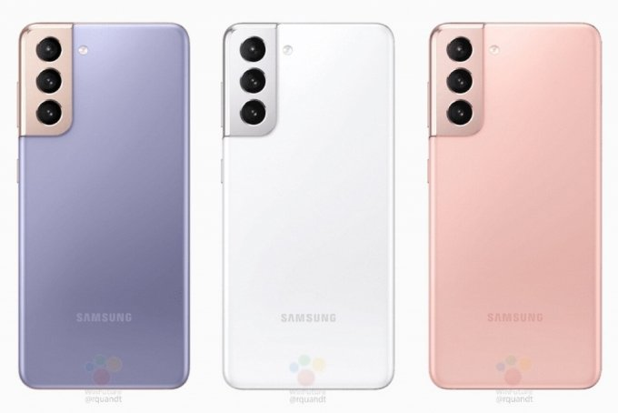
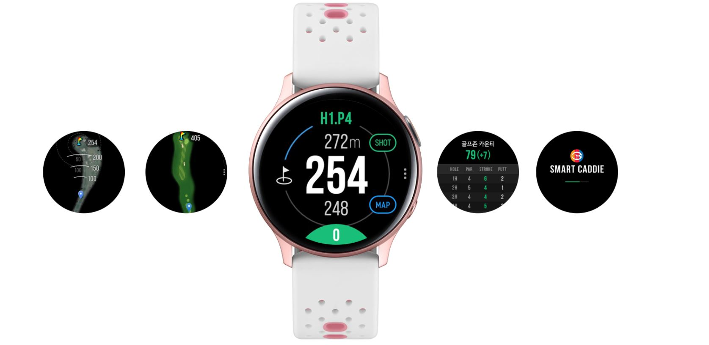
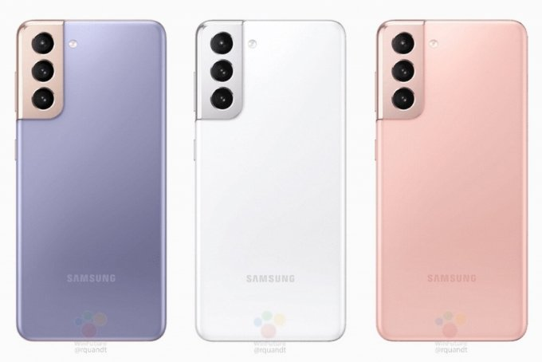
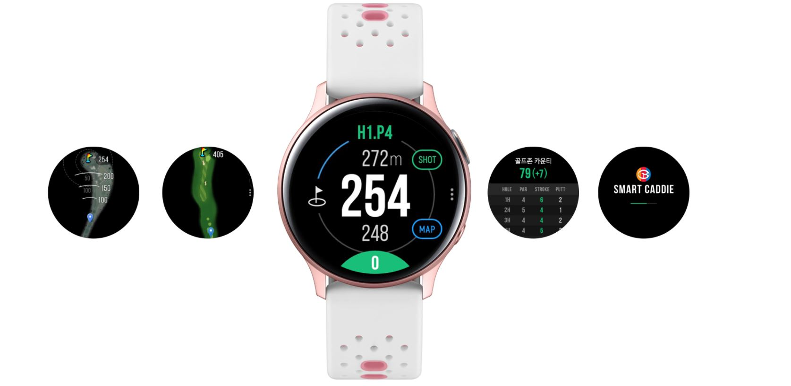
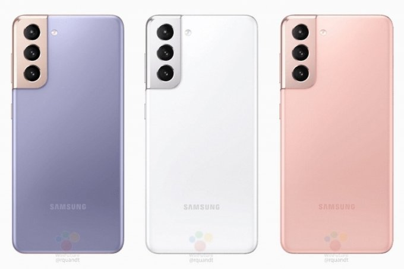
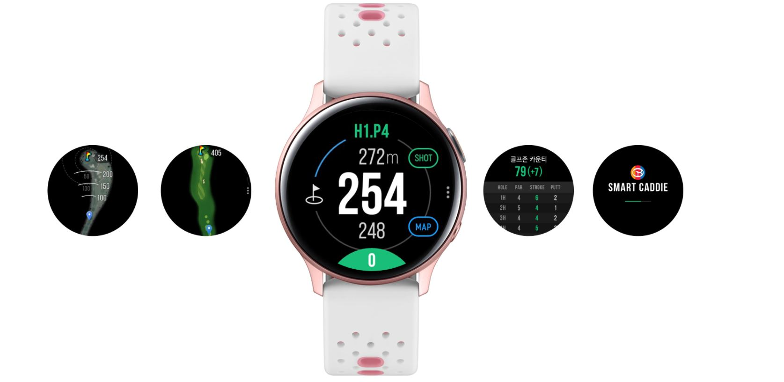

Samsung
이미지 클릭시 공식 사이트에 들어갑니다.
삼성은 대한민국에 본사를 두고 전자제품을 제조하는 대한민국 최대의 다국적 기업이다.
창사 이래로 세계 시장에서 한국 기업으로서는 매우 큰 성공을 이루어냈다.
현재 가장 인지도가 높은 대표적인 한국 기업으로 자리해 있다.
크게 반도체, LCD, 휴대폰, 가전 부문으로 사업부가 나뉘었으나
2008년부터 2009년까지 불어닥친 글로벌 경제 위기에 대응해 반도체와 LCD로 대표되는 부품 부문과
TV와 휴대폰, 냉장고로 대표되는 완제품 부문으로 사업부를 통합했다.
주소지 상 본사는 경기도 수원시 영통구 삼성로 129(매탄동) 삼성 디지털시티다.


Samsung
이미지 클릭시 공식 사이트에 들어갑니다.